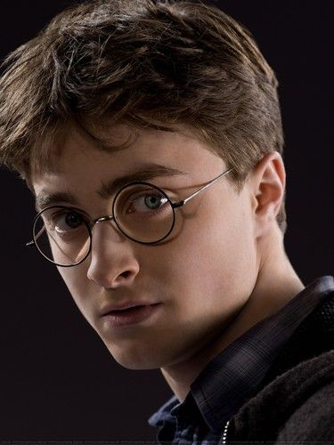
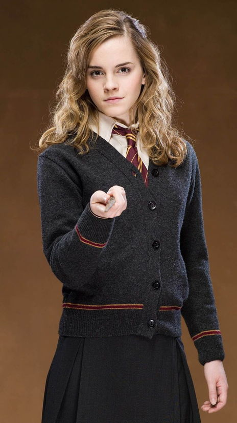

Main Characters of Universe Harry Potter
-
Harry Potter - in the book, the hero appears as a short, thin teenager, short for his 11 years.
He has a long, dishevelled hair, complemented by bright green eyes and a lightning scar, a mark of his encounter with the Dark Lord.
Harry is wearing the clothes of his cousin, Dudley, a squabbling, fat egomaniac.

-
Ron Weasley - One of the main characters in Potteriana, a friend and classmate of Harry Potter and Hermione Granger,
a member of the Golden Trio. The youngest son in the Weasley family. Holder of a special award from Hogwarts "For services to the school,"
received in 1993 for saving the school from the monster of the Chamber of Secrets - Basilisk.
-
Hermione Granger - loves her studies and devotes a lot of time to them. Sometimes she can be too arrogant and overly proud of her academic achievements.
She is ambitious, always tries to answer first in class and stands out with her knowledge, for which many people not unreasonably consider her a "know-it-all" and a "nerd".

-
Albus Percival Wulfric Brian Dumbledore - The most powerful wizard of his time and the only wizard Voldemort feared dueling with. The collector's card with Dumbledore's picture
on it says the following about him: Albus Dumbledore, Headmaster of Hogwarts School of Witchcraft and Wizardry. Considered to be the greatest wizard and genius of wizardry.